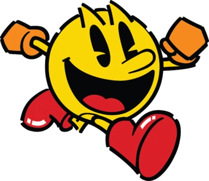
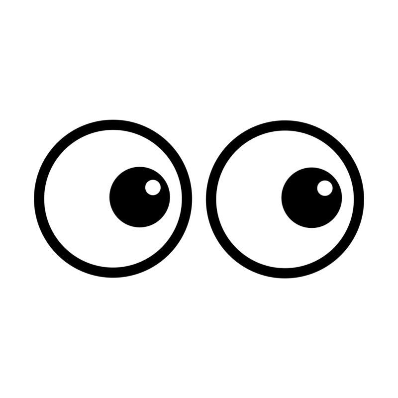

PacMen Factory
Create as many Pacmen as you would like with a factory function! Once the Pacmen have been created, press a button to make them all move around.
Visit the Repo!

Following Eyes
The eyes are watching! This function allows a pair of eyes to follow your mouse cursor as you move it around!
Visit the Repo!
Boston Bus Tracker
Display 'bus stops' throughout Boston that can be tracked on a map. These are placed with map markers made available through mapbox.gl!
Visit the Repo!